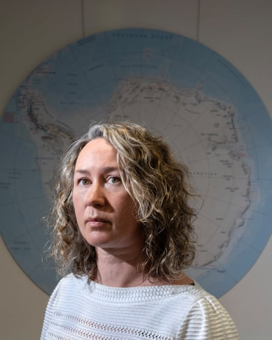
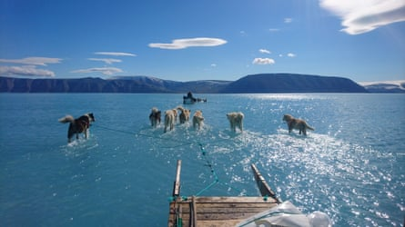

4-LouiseComposite: AP / Guardian Design
For more than 20 years, Louise Sime has worked at the British Antarctic Survey specialising in polar climate dynamics. She uses ice cores to reconstruct past conditions and predict future changes. She now leads several international Earth modelling projects.
Why are the Arctic and Antarctic regions important for the rest of the world? They are one of the pillars of global climate stability, a giant store of frozen water, an essential “biotic pump” that helps to store carbon, and an albedo shield that reflects much of the sun’s light and heat back out to space.
Louise Sime says the idea of crossing an Antarctic tipping point is ‘beyond worrying’.Photograph: Tom Pilston/The Guardian
When and why did scientists become concerned about tipping points in Antarctica ? It has become a major talking point in the past five to 10 years, though the possibility has been known for much longer. Up until 2016, the sea ice in Antarctica seemed relatively stable. Then everything started to change. At first, the decline was mostly in line with climate models. But suddenly, in 2023, there was an enormous drop. About 2.5 million sq km of Antarctic sea ice went missing relative to the average before 2023. The anomaly was of such a magnitude that it’s quite hard for scientists to know what to make of it. It has been described as a five sigma event.
What is a five sigma event? Something that may only happen once in 10,000 years, or higher, possibly once in several million years. It was so far outside of expectations that the statistics became really hard to handle. It was very startling.
What was the cause? It’s still not absolutely clear but it is probably associated with global warming and circulation changes in the oceans. In that year, there was an enormous atmospheric river event over East Antarctica, which was also a five sigma event. This coincided with the biggest heatwave on record, where we had a temperature anomaly in excess of 40C.
What effect did this have on the region? When that much sea ice is lost, there are substantial knock-on impacts. While the ocean is covered by ice, the temperature above the surface can easily be -20C, -30C. But as soon as the water is exposed, then the surface temperature cannot go below -2C. And once the surface is opened to the atmosphere, then you start to get evaporation of water vapour. That means a sudden and substantial change of weather around Antarctica.
What are the potential tipping points in the polar regions? Tipping points are broadly defined as abrupt changes that are irreversible, at least on human timescales. We know they are possible in polar ecosystems based on ice-core records going back 800,000 years. We are less sure where those tipping points are. That is because these regions are shaped by complex interactions. It also depends what scale we are talking about. Small, local tipping points may have already been passed on particular ice sheets or coastal ice shelves or possibly even sea ice. But it is less certain that the entire region is near a tipping point.

The collapse of ice shelves can remove the buttress on much bigger ice sheets, which can then slide into the ocean much faster, says Sime.Photograph: British Antarctic Survey/AFP/Getty Images
What are ice sheets and why do they matter? Ice must cover at least 50,000 sq km of land to qualify as an ice sheet, also known as a continental glacier. They grow when there is more snow than melt-off, and shrink when there is more melt-off than snow or if they slide into the sea. We know this is a risk in Antarctica, because it’s got a backward sloping bedrock. If the ice there is thinned, then at some point it starts floating in deep basins and begins melting from below. Then you would have a sort of catastrophic collapse.
How do they differ from ice shelves? Ice shelves are floating tongues of ice that flow out from land glaciers over a cold coastal ocean. They range in thickness from 50 to 600 metres, and help to buttress land ice. We’ve seen examples where they catastrophically collapse because melt water accumulates over the surface and forces cracks into the shelves. An ice shelf that may have been there for hundreds or thousands of years can collapse within months, possibly even weeks. By themselves, the collapse of ice shelves doesn’t add much to global sea-level rise, but it can remove the buttress on much bigger ice sheets, which can then slide faster into the ocean.
West Antarctica appears to be the area of greatest concern. Why? This is the location of two huge and vulnerable glaciers: Pine Island and Thwaites. We know that their buttressing gate glaciers on the shore are thinning and retreating. That allows more of the ice sheet to flow into the ocean. Satellite images show this has been going on for some time and has accelerated at least since the year 2000.
All of those glaciers are connected together so if they slipped into the ocean that would add about four metres to global ocean levels. But the key question is how long this will take. Looking at past records of change in Antarctica, it’s likely to take hundreds of years. But a very large acceleration would be felt almost immediately and it would result in the global sea level going up much, much faster in the near future.
How does this compare with the situation in the Arctic? The potential for Antarctica to increase global sea levels is scarier than for Greenland. Right now, they’re both contributing similar amounts to sea-level rise, but in future, it could be Greenland goes up a bit and then Antarctica goes up catastrophically.
Greenland has the potential to raise sea levels by five or six metres, but we don’t expect this will come in the form of an absolutely catastrophic, abrupt loss. Most of the ice in Greenland is not below sea level so we can see what is happening and we expect it will melt in a linear fashion.
By contrast, Antarctica has 80 metres of potential sea-level rise. We don’t expect all of that, but it is harder to know exactly what is happening. Much of Antarctica is below sea level and affected by the ocean, which means it is less stable and harder to observe. We also know there are parts of Antarctica where warm water is encroaching on to unstable shelves and we know that ice could retreat in some of the sloping basins – for example in East Antarctica and Wilkes Land. We don’t know where that tipping point is, but if we hit it, there will be an irreversible retreat of the West Antarctic sheet.
How long may that take? It’s safer to assume that parts of it could happen rapidly. We know that ice shelves can collapse in a matter of weeks or months.
On a bigger scale, evidence from the past suggests West Antarctica is unlikely to catastrophically lose all its ice in tens of years. It could unfold over hundreds or even thousands of years, but once you cross the tipping point and initiate that process, it is possible that we’d immediately see a substantial acceleration and jumps in sea level. We need more study.
Is it possible that this is already under way? Yes. Some studies have suggested we may have passed tipping points, so the loss of the West Antarctic ice sheet may now be inevitable because of the warming of the oceans.
However, this is far from clear. Tipping points definitely exist and we may already have passed some of the minor ones, but there’s also a good chance, in my view, that we haven’t yet crossed the major ones in Antarctica.
What would happen elsewhere if the Antarctic breaches these tipping points? A huge proportion of the global population lives very close to the sea level so if the oceans rise by several metres, I find it personally quite hard to think about the consequences. They would be devastating.
How would it affect the climate? A huge amount of the carbon dioxide that is emitted today is being sequestered in the Southern Ocean. But that only happens if ecosystems work effectively as a biological pump that draws carbon dioxide into the depths via plankton, krill and other species. If we cross tipping points in Antarctica, it would undermine that ecosystem. That would change the trajectory of how much carbon dioxide remains in the atmosphere in the coming years, and likely increase global temperature, which will be felt by everyone.
What is your gut feeling about whether we have crossed a tipping point in the Antarctic? It’s unthinkable, but it’s not impossible, and it looks more likely with each day that we continue burning fossil fuels. It’s beyond worrying.
What difference would it make if we stopped burning oil, gas, coal and trees? If we stop emitting carbon tomorrow, then it’s quite likely that we would see no further decreases in Arctic sea ice. And it’s quite likely that other parts of the global climate system would immediately stabilise and temperatures would stop going up. So even if we had passed some tipping points, it’s very likely that we would not pass any others.
Sled dogs wading through standing water on the sea ice during an expedition in North Western Greenland.Photograph: Steffen Olsen/Centre for Ocean and Ice at the/AFP/Getty Images
Is there any way to reverse what’s going on with a technological fix? Studies suggest geoengineering is speculative and could make things worse. I’m personally not against what-if modelling experiments: if we did have giant space mirrors, what would the climate of Earth look like at that point? But it’s unlikely in my personal view that any of them actually would be usable. They shouldn’t distract us from our primary goal which is to stop the burning of any fossil fuel as quickly as possible.
How do you feel about the risk of a tipping point in the Antarctic? As a human being, I have so much trouble trying to think about the magnitude of the sea-level rise, that I’m not sure I have the capacity to really think it through. I really enjoy working on polar science generally. It’s a privilege, but I don’t really have a good answer for you. We scientists just do our best to encourage everyone to decarbonise, please, for my kids’ future, as well as for everyone else’s kids.
Tipping points: on the edge? – a series on our future

Composite: Getty/Guardian Design
Tipping points – in the Amazon, Antarctic, coral reefs and more – could cause fundamental parts of the Earth system to change dramatically, irreversibly and with devastating effects. In this series, we ask the experts about the latest science – and how it makes them feel. Tomorrow, Tim Lenton talks about positive social tipping points
Read more